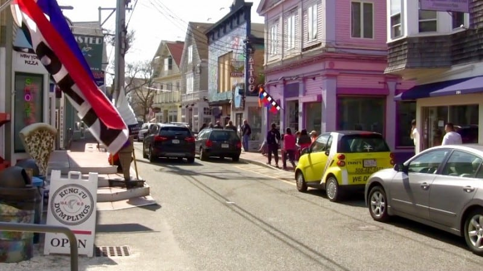

Why Vacation at Cape Cod?
Amazing Views

The scenic views at Cape Cod are a must-see. There is something intrinsically
beautiful about the ocean, and when you pair it with a sandy beach, some hills, and
a lighthouse, it creates a breathtaking view that no picture can truly capture.
Come to Cape Cod and take in the beauty of nature.
Sandy Beaches
When you come to an island, the number one thing on your mind is lying
out on the beach soaking in the sun. Cape Cod has 130 beautiful beaches
to make your sun-kissed dreams a reality. Other than beaches, there are a number of other
island attractions, such as paddle-boarding, kayaking and windsurfing that will give you
memories to last a lifetime.
Cute Shops

If you love antique shopping, Cape Cod is a prime location for you. There is a trail of
antique shops that goes through every town in Cape Cod. You are sure to find spectacular antiques.
There are also many souvenir/gift shops and bookstores as well.
Delicious Food
There are many reasons to visit Cape Cod, but if the views and attractions
don't grab you, you'll want to visit simply to please your taste buds. If you enjoy sea food,
Cape Cod is the place to go. Whether you choose to eat at a seafood shack
or go to an elegant restaurant, the fresh seafood is exquisite and will leave you happy and well fed.
About Cape Cod

Cape Cod is a hook-shaped peninsula located in Massachusetts. Cape Cod was named by Bartholomew Gosnold,
who was an English explorer. He visited the island in 1602. Gosnold named the island Cape Cod because
he took a large amount of codfish from the island. Today, the island is best know for its
beautiful beaches, delicious food, and scenic views. It is also one of the best places to spot whales,
making whale-watching a huge attraction at the Cape.
Best Places to Stay
Cape Codder Residence Club
1225 Iyannough Road, Hyannis, MA, 02601
Anchor In Distinctive Waterfront Lodging
1 South St., Hyannis, MA, 02601
Harbor Hotel Provincetown
698 Commercial Street, Provincetown, MA, 02657
Fun Facts About the Cape
- No County in the Country Has More Lighthouses than Cape Cod
- The Best Potato Chips in the Country are in Cape Cod
- Cape Cod is Home to One of the Most Beautiful and Longest Historic Districts in the Country